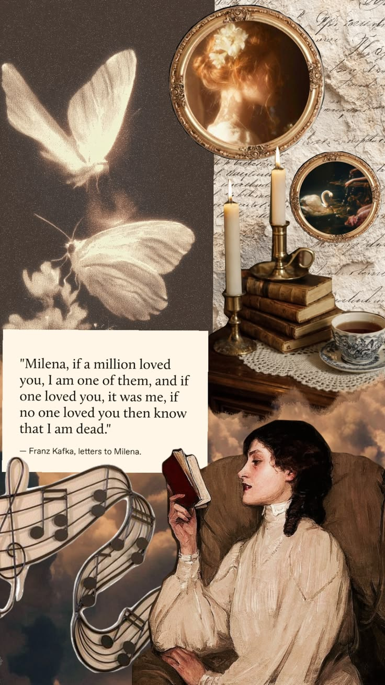
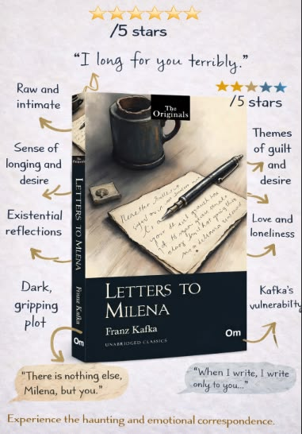
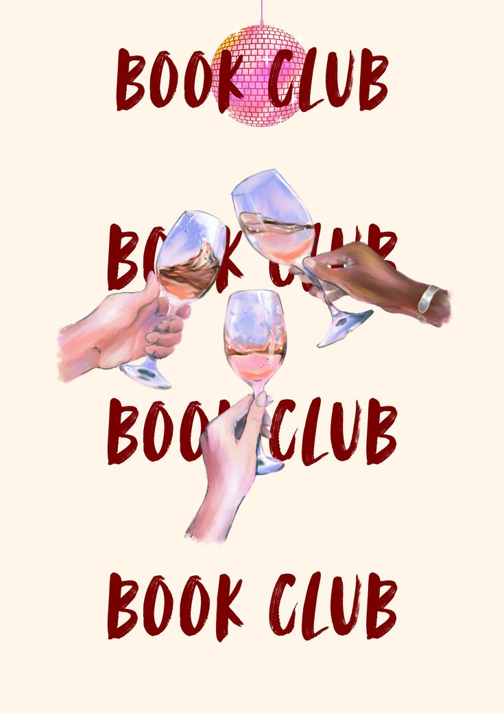

vol. 01 — issue nº 11 — november 2026
Spill the tea,
& read.
An online book club for girls who want to talk about every single feeling. One book a month, a pot of something warm and your softest cardigan. Read from anywhere, then spill with us.

to Milena F. Kafka · 1920

nº 01 — this month's pick
Letters to Milena
In 1920, a young Czech journalist named Milena Jesenská wrote to Franz Kafka asking if she could translate one of his stories. He said yes, and then he kept writing back. What followed was one of the most tender, anxious, achingly honest love stories ever put on paper.
They were rarely in the same city. Milena was married and living in Vienna; Kafka was in Prague, and often unwell. So almost the whole romance lives in these letters: the longing, the guilt, the jokes, the fear of being too much and never enough. We only get his side, which makes reading it feel like finding someone's diary tucked inside a library book.
It's not a plot-driven read. It's one to sip slowly, a few letters at a time, with a pencil for underlining the lines that wreck you.
longing / love & loneliness / guilt / vulnerability / existential thoughts
spill the tea & read — lending card
- vibe
- candlelit & yearning
- pairs with
- rose earl grey
- tissue level
- ♥♥♥♥♥
- for fans of
- diaries, poetry & longing
“Written kisses don't reach their destination; rather, they are drunk on the way by the ghosts.”
— Franz Kafka, Letters to Milena
nº 02 — spill the tea
Pour yourself
a question.
Tap the teapot for a discussion prompt, then bring your answer to the WhatsApp chat (or argue about it with us there).
Which letter would you have framed if it had been written to you?
- 01Grab the bookany edition, any format, borrowed is cute
- 02Brew somethingthis month: rose earl grey, the “Milena” blend
- 03Read & annotatetabs, underlines, little hearts in the margin
- 04Spill everythingonline, in pyjamas, with every feeling you had
nº 03 — the mood
Candlelight, old paper
& a little heartbreak.

“I am tired, I can't think of anything and want only to lay my face in your lap.”
— K. to M.the palette
- wine
800021 - berry
881144 - raspberry
c2185b - rose
c24366 - pink
ff69b4 - blush
ffe4d8
nº 04 — an online book club
Join the club.
No travel, no dress code. Read from your bed, your bath or your favourite café, and spill with us online.
- where
- Online, from anywhere
- pace
- One book a month
- cost
- Free, always ♡
come sit with us, darling
The club lives in our WhatsApp group chat. That's where we share reading check-ins, drop discussion prompts and spill everything we're feeling.
join the group chatopens whatsapp · free · leave any time